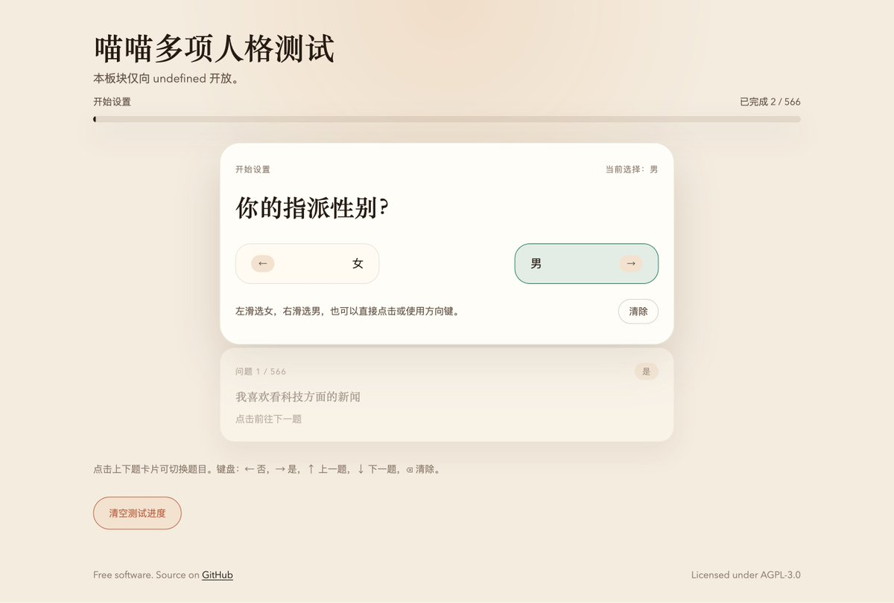

Rusndage小雪花❄️🍥
@RusndageSNF
@Beiyan_Yunyi 566题啊

北雁云依 - 21018365482@o3o.ca
@Beiyan_Yunyi
4.2 歪卜了一个测试，刚做完，发现做题鉴性别火了，正好贡献副标题。这不是我们明尼苏达多项人格测试™发明的梗吗，下次记得标明出处。
可能是用户体验最好的同类测验。按钮 / 键盘 / 手指拖动均可做题。做题进度保存在本地，刷新网页不重置。可利用碎片时间一点点完成。
https://t.co/ZVAqEhSpDz https://t.co/1Ic0tnGVv5 https://t.co/KM87aoVPtF